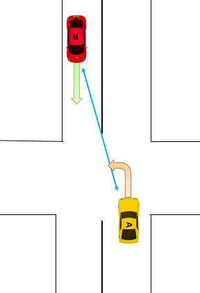

Quels sont les facteurs influençant la décision des conducteurs de tourner à gauche à une intersection non signalisée ?
Introduction
L’environnement routier est de nos jours mixtes, puisqu’il compte des véhicules de différents niveaux d’autonomie.
Les véhicules autonomes, sont des véhicules capables de réaliser des tâches de conduite sans qu’un humain ait à intervenir. Il existe plusieurs niveaux d’autonomie, en fonction des tâches que le véhicule autonome est capable de réaliser. Il existe six niveaux définis par la SAE, dont le niveau zéro correspond à un véhicule classique comprenant aucune automatisation de la conduite et pour lequel le conducteur est nécessaire à toutes les étapes de conduite. Le niveau six correspond à un véhicule entièrement automatisé, où le conducteur humain devient lui aussi un passager (passaducteur) puisqu’il n’a plus besoin d’intervenir dans la tâche de conduite.
L’enjeu actuel est la période d’interaction entre les conducteurs et les véhicules autonomes, comme le montre l’accidentologie impliquant des véhicules autonomes menée par Favaro et al. (2017). L’environnement routier est pour le moment dominé par les véhicules non autonomes, ce qui implique des méthodes de communications toujours définies par les interactions entre conducteurs (contact visuel, gestuelle) et le comportement des véhicules (vitesse, direction) (Farber et al., 2016). Ces méthodes de communication ne permettent pas aux véhicules autonomes de communiquer clairement leurs intentions, et des études s’intéressent désormais au problème du « langage of driving (LoD) » (Kalda, et al., 2022).
Les tourne-à-gauche non signalisés impliquant une insertion dans un flux routier, constitue un réel challenge pour les véhicules autonomes. En effet, cette intersection constitue l’une des situations routières particulièrement accidentogène entre conducteurs de véhicules non automatisés (Page & Chauvel, 2004). De nombreuses études ont été effectuées sur cette intersection, pour proposer des systèmes d’aide à l’insertion aux conducteurs (Raagland, et al., 2006, Gelau et al. 2011). Ces systèmes se basent sur la distance critique (critical gap), pour indiquer aux conducteurs quand il est dangereux de s’insérer. Concrètement, pour s’insérer dans une intersection, ils se réfèrent à la distance les séparant du véhicule approchant sur la voie opposée. En fonction de la distance séparant les deux véhicules (représentée par la flèche bleue sur la Figure 1), le véhicule autonome va prendre la décision de s’engager ou non devant le véhicule en approche. La distance critique se définie comme la distance seuil où les conducteurs ne s’engagent pas devant le véhicule en approche.
Figure 1. Schéma de la distance critique.
Pour circuler, les systèmes de navigations qu’utilisent les véhicules autonomes sont aussi basés sur cette distance critique (Abhishek, et al., 2019).
Cependant, Liu et al., (2014), ont montré que l’une des limitations fondamentales à l’application pratique de ces systèmes, était l’incapacité à incorporer différents comportements. Les systèmes ne prenant en compte qu’une valeur seuil universelle ne permettent pas de prédire toutes les situations (Brilon, 1988). En effet, le choix de la distance critique est influencé par de nombreux facteurs, tel que l’âge, le genre, la vitesse d’approche d’un véhicule en face, le volume du trafics sur la voie à traverser, le temps d’attente à l’intersection, (Abhishek, et al., 2019, Raglang, 2003, Li et al., 2021, Nagalla, 2017, Yan et al., 2007).
Cette étude a donc pour objectif d’identifier quels sont les facteurs ayant un effet sur la prise de décision de s’engager ou non à une intersection non signalisée.
Protocole
Cette étude sera menée sous forme de questionnaire, rédigée selon le protocole d’Anderson.
Le protocole d’Anderson se base sur la théorie fonctionnelle de la Cognition (Anderson, 1981, 1982, 1996) qui permet de comprendre comment les individus émettent un jugement, à partir de plusieurs informations. Lorsqu’un individu doit dans une situation donnée, traiter simultanément plusieurs informations pour répondre à une question, Anderson explique que cet individu sera amené à réaliser trois opérations : valuation, intégration et action. Ces trois opérations répondent aux lois de l’intégration de l’information, et sont donc être réalisées dans cet ordre précis.
D’après Anderson, la valuation est l’opération que l’individu mène pour transformer une information donnée en une valeur subjective. L’intégration va permettre de cumuler toutes les valeurs subjectives nécessaires pour répondre à la question. Cette opération va aboutir à une réponse implicite, puisque non observable. C’est uniquement lors de l’opération d’action, que l’individu produira une réponse observable.
Hurgobin (2020), explique le protocole d’Anderson, comme la présentation de plusieurs exemples concrets d’une situation à laquelle les individus peuvent s’identifier. Pour chaque exemple d’une même situation, le type d’information fourni demeurera identique mais les modalité de cette information sera différente.
Par exemple, dans notre cas on cherche à identifier les facteurs qui influencent la prise de décision de s’engager dans une intersection en voiture.
Situation : Yves se rend chez son frère, il a 15km à parcourir et il est en retard. Il arrive à une intersection, et doit tourner à gauche, sur une route départementale. Sur la route, une voiture arrive sur la voie opposée.
Exemple 1 : Il voit une voiture à environ 100 mètres, arrivant lentement dans sa direction.
Exemple 2 : Il voit une voiture à environ 30 mètres, arrivant rapidement dans sa direction.
Selon vous, quelle est la probabilité que vous traversiez l’intersection devant la voiture en approche ?
On remarque que l’individu, reçoit une information sur la distance à laquelle se trouve le véhicule en approche et une seconde information sur la vitesse d’approche de ce véhicule. Cependant, les modalités d’un même type d’information sont différentes.
Ce protocole va nous permettre d’identifier, quels facteurs (informations) ont un effet sur la prise de décision du conducteur, et les interactions entre ces différents facteurs.
Bibliographie
Abhishek, Boon, M. A. A., & Mandjes, M. (2019). Generalized gap acceptance models for unsignalized intersections. Mathematical Methods of Operations Research, 89(3), 385‑409. https://doi.org/10.1007/s00186-019-00662-0
Anderson, N. H. (1981). Foundations of information integration theory. Academic Press.
Anderson, N. H. (1982). Methods of information integration theory. Academic Press.
Anderson, N. H. (1996). A functional theory of cognition. Erlbaum.
Brilon, W. (1988). Recent developments in calculation methods for unsignalized intersections in West Germany. Intersections without traffic signals, 111‑153.
Driving, A. (2014). Levels of driving automation are defined in new SAE international standard J3016 : 2014. SAE International: Warrendale, PA, USA, 1.
(Eric) Li, Y., Hao, H., Gibbons, R. B., & Medina, A. (2021). Understanding Gap Acceptance Behavior at Unsignalized Intersections using Naturalistic Driving Study Data. Transportation Research Record: Journal of the Transportation Research Board, 2675(9), 1345‑1358. https://doi.org/10.1177/03611981211007140
Färber, B. (2016). Communication and communication problems between autonomous vehicles and human drivers. In Autonomous driving (p. 125‑144). Springer.
Favarò, F. M., Nader, N., Eurich, S. O., Tripp, M., & Varadaraju, N. (2017). Examining accident reports involving autonomous vehicles in California. PLOS ONE, 12(9), e0184952. https://doi.org/10.1371/journal.pone.0184952
Gelau, C., Sirek, J., & Dahmen-Zimmer, K. (2011). Effects of time pressure on left-turn decisions of elderly drivers in a fixed-base driving simulator. Transportation Research Part F: Traffic Psychology and Behaviour, 14(1), 76‑86. https://doi.org/10.1016/j.trf.2010.10.002
Hurgobin, Y. (2020). Influence des attributs de l’étiquette sur le choix alimentaire : Apports des méthodologies issues de la psychologie [PhD Thesis]. Université Toulouse le Mirail-Toulouse II.
Kalda, K., Pizzagalli, S.-L., Soe, R.-M., Sell, R., & Bellone, M. (2022). Language of Driving for Autonomous Vehicles. Applied Sciences, 12(11), 5406. https://doi.org/10.3390/app12115406
Liu, M., Lu, G., Wang, Y., & Zhang, Z. (2014). Analyzing drivers’ crossing decisions at unsignalized intersections in China. Transportation research part F: traffic psychology and behaviour, 24, 244‑255.
Liu, Y.-C., & Tung, Y.-C. (2014). Risk analysis of pedestrians’ road-crossing decisions : Effects of age, time gap, time of day, and vehicle speed. Safety science, 63, 77‑82.
Nagalla, R., Pothuganti, P., & Pawar, D. S. (2017). Analyzing Gap Acceptance Behavior at Unsignalized Intersections Using Support Vector Machines, Decision Tree and Random Forests. Procedia Computer Science, 109, 474‑481. https://doi.org/10.1016/j.procs.2017.05.312
Page, Y., & Chauvel, C. (2004). Statistic accident analysis and definition of relevant scenarios. Rapport technique, LAB/PReVENT, Nanterre, Paris.
Ragland, D., Arroyo, S., Shladover, S. E., Minsener, J. A., & Chan, C.-Y. (2006). Gap Acceptance for Vehicles Turning Left Across Oncoming Traffic : Implications for Intersection Decision Support.
Ragland, D. R., & Zabyshny, A. A. (2003). Intersection decision support project : Taxonomy of crossing-path crashes at intersections using GES 2000 data
Yan, X., Radwan, E., & Guo, D. (2007). Effects of major-road vehicle speed and driver age and gender on left-turn gap acceptance. Accident Analysis & Prevention, 39(4), 843‑852. https://doi.org/10.1016/j.aap.2006.12.006